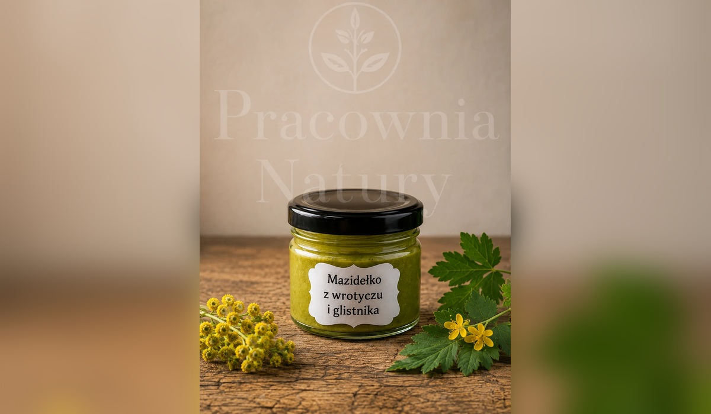
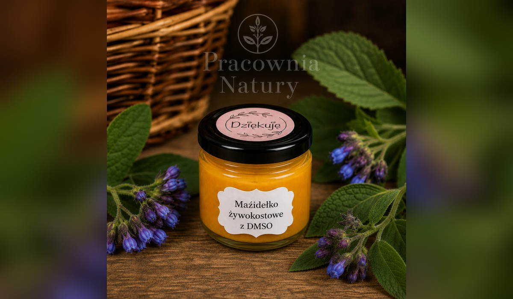

🌿 Wszystkie wyroby przygotowywane są ręcznie w małych partiach.
Pracownia Natury EKO
RĘCZNIE TWORZONE PRODUKTY INSPIROWANE NATURĄ
☰
Strona główna
Nasze wyroby
O Pracowni
Atlas roślin
Kontakt
← Powrót do kategorii
Nasze wyroby
Naturalna pielęgnacja
Wybierz wyrób, sprawdź opis i cenę, a następnie dodaj go do koszyka.

wyrób Pracowni
Mazidełko z wrotyczu i glistnika
📖 Opis produktu
wyrób Pracowni
Mazidełko wrotyczowe
📖 Opis produktu
wyrób Pracowni
Naturalny dezodorant różany
📖 Opis produktu
wyrób Pracowni
Pasta do zębów bez fluoru
📖 Opis produktu
wyrób Pracowni
Okłady z żywokostu
📖 Opis produktu

wyrób Pracowni
Mazidełko żywokostowe z DMSO
📖 Opis produktu